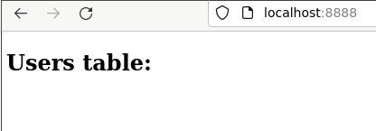
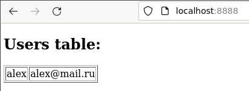
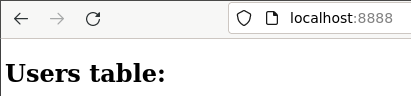
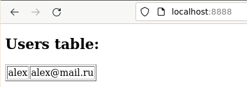

Docker Compose
В данном практическом занятии предлагается ознакомиться с возможностью сборки и развертывания среды из нескольких связанных контейнеров при помощи docker-compose.
Vagrant
Для работы с docker можно воспользоваться следующим Vagrantfile:
Vagrant.configure("2") do |config|
config.vm.box = "ubuntu/lunar64"
config.vm.provision "docker"
config.vm.network "forwarded_port", guest: 8888, host: 8888
end
Используя docker provisioner на машину также установится docker compose в виде плагина.
Либо можно воспользоваться инструкцией с официального сайта.
Project
Создадим файл compose.yaml с простой конфигурацией:
name: app
services:
front:
image: nginx:1.25
ports:
- 8888:80
restart: always
Здесь мы указали:
name - имя нашего проекта, которое будет использоваться в качестве префикса к созданным нами ресурсам(по-умолчанию используется имя директории)
services - список сервисов для которых требуется запускать контейнеры
front - имя нашего первого сервиса
image - образ контейнера
ports - список пробрасываемых портов
restart - политика перезапуска при завершении
Для запуска достаточно выполнить команду docker compose up:
$ docker compose up -d
[+] Running 8/8
✔ front 7 layers [⣿⣿⣿⣿⣿⣿⣿] 0B/0B Pulled 10.8s
✔ a803e7c4b030 Pull complete 5.6s
✔ 8b625c47d697 Pull complete 6.3s
✔ 4d3239651a63 Pull complete 0.7s
✔ 0f816efa513d Pull complete 1.7s
✔ 01d159b8db2f Pull complete 2.2s
✔ 5fb9a81470f3 Pull complete 3.0s
✔ 9b1e1e7164db Pull complete 3.6s
[+] Running 2/2
✔ Network app_default Created 0.1s
✔ Container app-front-1 Started 0.2s
Ключ -d запускает контейнеры в фоновом режиме. Как видно из вывода - автоматически
скачалася необходимый образ, а также создалась кастомная сеть app_default. Если
сейчас сделать запрос на адрес localhost:8888, то мы получим стандартное приглашение
от nginx:
$ curl -s localhost:8888 | grep title
<title>Welcome to nginx!</title>
Информацию же по запущенным контейнерам для сервисов в compose.yaml файле можно
получить с помощью подкоманд docker compose, таких как ls, ps и top:
$ docker compose ls
NAME STATUS CONFIG FILES
app running(1) /home/vagrant/compose.yaml
$ docker compose ps
NAME IMAGE COMMAND SERVICE CREATED STATUS PORTS
app-front-1 nginx:1.25 "/docker-entrypoint.sh nginx -g 'daemon off;'" front 10 minutes ago Up 10 minutes 0.0.0.0:8888->80/tcp, :::8888->80/tcp
$ docker compose top
app-front-1
UID PID PPID C STIME TTY TIME CMD
root 3909 3888 0 21:18 ? 00:00:00 nginx: master process nginx -g daemon off;
syslog 3963 3909 0 21:18 ? 00:00:00 nginx: worker process
syslog 3964 3909 0 21:18 ? 00:00:00 nginx: worker process
Front
Сделаем в сервисе front отдачу статичной html страницы, которая будет располагаться
в директории проекта, а также добавим конфигурацию для проксирования в будущий back.
Страница будет выглядеть таким образом:
<!DOCTYPE html>
<html>
<body>
<h2>Users table:</h2>
<p id="users"></p>
<script>
var req = function() {
var http = new XMLHttpRequest();
http.onload = function() {
const users = JSON.parse(this.responseText);
let text = "<table border='1'>"
for (let x in users) {
text += "<tr><td>" + users[x].name + "</td>";
text += "<td>" + users[x].email + "</td></tr>";
}
text += "</table>"
document.getElementById("users").innerHTML = text;
}
http.open("GET", "/back");
http.send();
}
setInterval(req, 1000);
</script>
</body>
</html>
А конфигурация для nginx так:
server {
listen 80;
listen [::]:80;
server_name localhost;
location / {
root /usr/share/nginx/html;
index index.html index.htm;
}
error_page 500 502 503 504 /50x.html;
location = /50x.html {
root /usr/share/nginx/html;
}
location /back {
resolver 127.0.0.11;
set $backend http://back;
proxy_pass $backend;
}
}
Сохраним их в файлах index.html и default.conf соответственно в директорию проекта.
Сам же compose.yaml дополним следующим образом:
name: app
services:
front:
image: nginx
ports:
- 8888:80
volumes:
- ./index.html:/usr/share/nginx/html/index.html
configs:
- source: nginx
target: /etc/nginx/conf.d/default.conf
restart: always
configs:
nginx:
file: ./default.conf
Здесь мы используем параметр volumes для проброса файла index.html внутрь контейнера,
а также параметры configs для определения конфигурационного файла и передачи его
также внутрь контейнера. Для применения данной конфигурации также запустим команду
docker compose up:
$ docker compose up -d
[+] Running 1/1
✔ Container app-front-1 Started 0.2s
$ curl -s localhost:8888 | grep h2
<h2>Users table:</h2>

DB
Добавим сервис в наш compose.yaml с базой данных, которая будет содержать
таблицу с пользователями. Чтобы не хранить данные для авторизации в compose.yaml
можно использовать файл .env, в котором можно сохранить чувствительные данные, а также,
например, исключить из системы контроля версий. Создадим .env файл с данными для
авторизации в субд:
DB_USER="app"
DB_PASS="pass"
Также создадим файл users.sql для инициализации базы:
grant all on database app to app;
\connect app;
create table users(
id serial primary key,
name varchar(50),
email varchar(100)
);
grant all on all tables in schema public to app;
Теперь дополним compose.yaml новым сервисом db:
name: app
services:
front:
image: nginx
ports:
- 8888:80
volumes:
- ./index.html:/usr/share/nginx/html/index.html
configs:
- source: nginx
target: /etc/nginx/conf.d/default.conf
restart: always
db:
image: postgres
environment:
POSTGRES_USER: "${DB_USER}"
POSTGRES_PASSWORD: "${DB_PASS}"
volumes:
- ./users.sql:/docker-entrypoint-initdb.d/users.sql
restart: always
configs:
nginx:
file: ./default.conf
Применим новую конфигурацию:
$ docker compose up -d
[+] Running 14/14
✔ db 13 layers [⣿⣿⣿⣿⣿⣿⣿⣿⣿⣿⣿⣿⣿] 0B/0B Pulled 19.0s
✔ a803e7c4b030 Already exists 0.0s
✔ 009c876521a0 Pull complete 0.5s
✔ 9c412905cca2 Pull complete 0.9s
✔ 6463d4bf467a Pull complete 1.0s
✔ bd8b983728ed Pull complete 3.0s
✔ febc167f3560 Pull complete 1.5s
✔ d73c81c4ade3 Pull complete 2.1s
✔ 34b3b0ac6e9e Pull complete 1.9s
✔ 9bd86d074f4e Pull complete 12.7s
✔ 406f63329750 Pull complete 3.7s
✔ ec40772694b7 Pull complete 3.9s
✔ 7d3dfa1637e9 Pull complete 4.4s
✔ e217ca41159f Pull complete 4.4s
[+] Running 2/2
✔ Container app-db-1 Started 0.3s
✔ Container app-front-1 Running 0.0s
$ docker exec -it app-db-1 su - postgres -c 'psql -U app app -c \\d'
List of relations
Schema | Name | Type | Owner
--------+--------------+----------+-------
public | users | table | app
public | users_id_seq | sequence | app
(2 rows)
Теперь у нас есть два работающих сервиса front и db. Как видно база была
инициализирована за счет монтирования файла users.sql по пути
docker-entrypoint-initdb.d - это происходит только если она пуста.
Back
Осталось добавить сервис back, который будет принимать запросы из front по http
и возвращать список пользователей из db. Можете использовать свой любимый язык, на
golang приложение может выглядеть так:
package main
import (
"context"
"encoding/json"
"fmt"
"net/http"
"os"
"github.com/jackc/pgx/v5"
)
type users struct {
ID int `json:"id"`
Name string `json:"name"`
Email string `json:"email"`
}
func main() {
ctx := context.Background()
connStr, err := os.ReadFile("/run/secrets/connection_string")
if err != nil {
fmt.Fprintf(os.Stderr, "Error read connection secret: %v\n", err)
os.Exit(1)
}
conn, err := pgx.Connect(ctx, string(connStr))
if err != nil {
fmt.Fprintf(os.Stderr, "Unable to connect to database: %v\n", err)
os.Exit(1)
}
defer conn.Close(ctx)
http.ListenAndServe("0.0.0.0:80", http.HandlerFunc(
func(w http.ResponseWriter, r *http.Request) {
rows, err := conn.Query(ctx, "select * from users")
if err != nil {
fmt.Printf("error db query: %s", err)
return
}
users, err := pgx.CollectRows(rows, pgx.RowToStructByName[users])
if err != nil {
fmt.Printf("error collect rows: %s", err)
return
}
jsonUsers, err := json.Marshal(users)
if err != nil {
fmt.Printf("error marshal json: %s", err)
}
w.Header().Add("Access-Control-Allow-Origin", "*")
w.Write(jsonUsers)
}),
)
}
Приложение будет прослушивать порт 80 и подключаться к базе взяв данные для подключения
из файла /run/secrets/connection_string. Сами параметры подключения также занесем
в файл .env, так они содержат имя пользователя и пароль:
DB_USER="app"
DB_PASS="pass"
DB_CONN="postgres://app:pass@db:5432/app?sslmode=disable"
Для сборки потребуется следующий Dockerfile:
FROM golang:1.21 as build
WORKDIR /src
COPY main.go /src/main.go
RUN go mod init example \
&& go mod tidy \
&& CGO_ENABLED=0 go build -o /bin/app ./main.go
FROM scratch
COPY --from=build /bin/app /app
CMD ["/app"]
Добавим сервис back в compose.yaml:
name: app
services:
front:
image: nginx
ports:
- 8888:80
volumes:
- ./index.html:/usr/share/nginx/html/index.html
configs:
- source: nginx
target: /etc/nginx/conf.d/default.conf
restart: always
back:
image: back
build: .
depends_on:
- db
restart: always
secrets:
- connection_string
db:
image: postgres
environment:
POSTGRES_USER: "${DB_USER}"
POSTGRES_PASSWORD: "${DB_PASS}"
volumes:
- ./users.sql:/docker-entrypoint-initdb.d/users.sql
restart: always
configs:
nginx:
file: ./default.conf
secrets:
connection_string:
environment: "DB_CONN"
Для данного сервиса мы указали путь для сборки образа, также указали его зависимость от
сервиса db, а параметры подключения к субд вынесли в отдельный блок secrets.
После запуска команды docker compose up при отсутствии образа происходит сборка,
либо можно явно указать опцию --build:
$ docker compose up -d --build
[+] Running 1/1
! back Warning 1.6s
[+] Building 66.7s (10/10) FINISHED docker:default
=> [back internal] load build definition from Dockerfile 0.0s
=> => transferring dockerfile: 260B 0.0s
=> [back internal] load .dockerignore 0.0s
=> => transferring context: 2B 0.0s
=> [back internal] load metadata for docker.io/library/golang:1.21 1.8s
=> [back build 1/4] FROM docker.io/library/golang:1.21@sha256:e9ebfe932adeff65af5338 34.5s
=> => resolve docker.io/library/golang:1.21@sha256:e9ebfe932adeff65af5338236f0b0604c8 0.0s
=> => sha256:b47a222d28fa95680198398973d0a29b82a968f03e7ef361cc8ded 24.03MB / 24.03MB 6.4s
=> => sha256:debce5f9f3a9709885f7f2ad3cf41f036a3b57b406b27ba3a8839 64.11MB / 64.11MB 16.0s
=> => sha256:e9ebfe932adeff65af5338236f0b0604c86b143c1bff3e1d0551d8f6 2.36kB / 2.36kB 0.0s
=> => sha256:e63f8cf91f5b59ce217f2804936132b2964b04bb5b06c0a79b9e3799 1.58kB / 1.58kB 0.0s
=> => sha256:6285f5529f1ba8755fd2469d255fa9e0429d5fa8c6003d52da5ea098 7.22kB / 7.22kB 0.0s
=> => sha256:167b8a53ca4504bc6aa3182e336fa96f4ef76875d158c1933d3e2 49.56MB / 49.56MB 13.8s
=> => sha256:91b457aaf04f424db4f223ea7aad4b196d4a62da58d6f45938233 92.30MB / 92.30MB 25.5s
=> => sha256:ab90286b1543edaec4dd9402a487a164307c216d646369c8e5924 66.99MB / 66.99MB 27.1s
=> => extracting sha256:167b8a53ca4504bc6aa3182e336fa96f4ef76875d158c1933d3e2fa19c57e 2.9s
=> => sha256:1bcec06b980f5d54c94a469aeb286627475f645205140fb3ed0514e32ce 156B / 156B 16.2s
=> => extracting sha256:b47a222d28fa95680198398973d0a29b82a968f03e7ef361cc8ded562e4d8 0.9s
=> => extracting sha256:debce5f9f3a9709885f7f2ad3cf41f036a3b57b406b27ba3a883928315787 3.7s
=> => extracting sha256:91b457aaf04f424db4f223ea7aad4b196d4a62da58d6f45938233e0f54bd1 3.3s
=> => extracting sha256:ab90286b1543edaec4dd9402a487a164307c216d646369c8e59248fb92da4 5.2s
=> => extracting sha256:1bcec06b980f5d54c94a469aeb286627475f645205140fb3ed0514e32cebe 0.0s
=> [back internal] load build context 0.0s
=> => transferring context: 1.22kB 0.0s
=> [back build 2/4] WORKDIR /src 0.2s
=> [back build 3/4] COPY main.go /src/main.go 0.0s
=> [back build 4/4] RUN go mod init example && go mod tidy && CGO_ENABLED=0 go b 29.7s
=> [back stage-1 1/1] COPY --from=build /bin/app /app 0.1s
=> [back] exporting to image 0.1s
=> => exporting layers 0.1s
=> => writing image sha256:c255013929d1de7c54527cbd2dd09cdb03a2cc0a932cfc44b62d924ada 0.0s
=> => naming to docker.io/library/back 0.0s
[+] Running 3/3
✔ Container app-front-1 Running 0.0s
✔ Container app-db-1 Running 0.0s
✔ Container app-back-1 Started 0.0s
Теперь у нас подняты все сервисы для полноценного функционирования нашего проекта, добавим пользователя в нашу базу:
docker exec -it app-db-1 su - postgres -c "psql -U app app -c \"insert into users (name,email) values ('alex', 'alex@mail.ru');\""
Убедимся в работе на страницы нашего проекта: 
Volume
На текущий момент при пересоздании контейнеров проекта данные в базе будут стираться,
для этого можно воспользоваться командой docker compose rm:
$ docker compose rm -sf
[+] Stopping 3/3
✔ Container app-back-1 Stopped 0.1s
✔ Container app-front-1 Stopped 0.2s
✔ Container app-db-1 Stopped 0.2s
Going to remove app-back-1, app-db-1, app-front-1
[+] Removing 3/0
✔ Container app-front-1 Removed 0.0s
✔ Container app-back-1 Removed 0.0s
✔ Container app-db-1 Removed 0.0s
$ docker compose up -d
[+] Running 3/3
✔ Container app-db-1 Started 0.0s
✔ Container app-front-1 Started 0.0s
✔ Container app-back-1 Started 0.0s

Добавим именованный том для хранения данных в compose.yaml:
name: app
services:
front:
image: nginx
ports:
- 8888:80
volumes:
- ./index.html:/usr/share/nginx/html/index.html
configs:
- source: nginx
target: /etc/nginx/conf.d/default.conf
restart: always
back:
image: back
build: .
depends_on:
- db
restart: always
secrets:
- connection_string
db:
image: postgres
environment:
POSTGRES_USER: "${DB_USER}"
POSTGRES_PASSWORD: "${DB_PASS}"
volumes:
- db-data:/var/lib/postgresql/data
- ./users.sql:/docker-entrypoint-initdb.d/users.sql
restart: always
configs:
nginx:
file: ./default.conf
secrets:
connection_string:
environment: "DB_CONN"
volumes:
db-data:
Убедимся что данные сохранятся:
$ docker compose rm -sf
[+] Stopping 3/3
✔ Container app-back-1 Stopped 0.2s
✔ Container app-front-1 Stopped 0.2s
✔ Container app-db-1 Stopped 0.2s
Going to remove app-back-1, app-db-1, app-front-1
[+] Removing 3/0
✔ Container app-front-1 Removed 0.0s
✔ Container app-back-1 Removed 0.0s
✔ Container app-db-1 Removed 0.0s
$ fg^C
$ docker compose up -d
[+] Running 4/4
✔ Volume "app_db-data" Created 0.0s
✔ Container app-db-1 Started 0.0s
✔ Container app-front-1 Started 0.0s
✔ Container app-back-1 Started 0.0s
$ docker exec -it app-db-1 su - postgres -c "psql -U app app -c \"insert into users (name,email) values ('alex', 'alex@mail.ru');\""
INSERT 0 1
$ docker compose rm -sf
[+] Stopping 3/3
✔ Container app-back-1 Stopped 0.2s
✔ Container app-front-1 Stopped 0.2s
✔ Container app-db-1 Stopped 0.2s
Going to remove app-back-1, app-db-1, app-front-1
[+] Removing 3/0
✔ Container app-front-1 Removed 0.0s
✔ Container app-back-1 Removed 0.0s
✔ Container app-db-1 Removed 0.0s
$ docker compose up -d
[+] Running 3/3
✔ Container app-front-1 Started 0.0s
✔ Container app-db-1 Started 0.0s
✔ Container app-back-1 Started 0.0s

Network
По умолчанию созданные сервисы находятся в общей сети и контейнеры могут обращаться
друг к другу по именам сервисов. В целях безопасности изолируем сервис db, чтобы
к нему можно было обратиться только из сервиса back. Для этого создадим две сети
front и db и подключим сервисы к ним:
name: app
services:
front:
image: nginx
ports:
- 8888:80
volumes:
- ./index.html:/usr/share/nginx/html/index.html
configs:
- source: nginx
target: /etc/nginx/conf.d/default.conf
restart: always
networks:
- front
back:
image: back
build: .
depends_on:
- db
restart: always
secrets:
- connection_string
networks:
- front
- db
db:
image: postgres
environment:
POSTGRES_USER: "${DB_USER}"
POSTGRES_PASSWORD: "${DB_PASS}"
volumes:
- db-data:/var/lib/postgresql/data
- ./users.sql:/docker-entrypoint-initdb.d/users.sql
restart: always
networks:
- db
configs:
nginx:
file: ./default.conf
secrets:
connection_string:
environment: "DB_CONN"
networks:
db:
front:
volumes:
db-data:
Убедимся в этом:
$ docker exec app-front-1 curl -sS db:5432
curl: (52) Empty reply from server
$ docker compose up -d
[+] Running 5/5
✔ Network app_front Created 0.1s
✔ Network app_db Created 0.1s
✔ Container app-db-1 Started 0.2s
✔ Container app-front-1 Started 0.3s
✔ Container app-back-1 Started 0.2s
$ docker exec app-front-1 curl -sS db:5432
curl: (6) Could not resolve host: db